32. Les scénarios Jeedom¶
32.1 Créer un scénario provoqué¶
Sous Jeedom, les scénarios permettent d'automatiser des comportements, par exemple ouvrir la lumière de la cuisine quand la porte s'ouvre.
Vous devez d'abord ajouter vos appareils connectés à Jeedom et idéalement les associer aux objets qui représentent les pièces de votre maison.
Écriture d'un scénario¶
Lançons-nous maintenant dans un scénario qui fera allumer la lumière lorsque la porte s'ouvre.
Pour ajouter un scénario :
- Rendez-vous dans le menu Outils / Scénarios puis cliquez sur Ajouter.
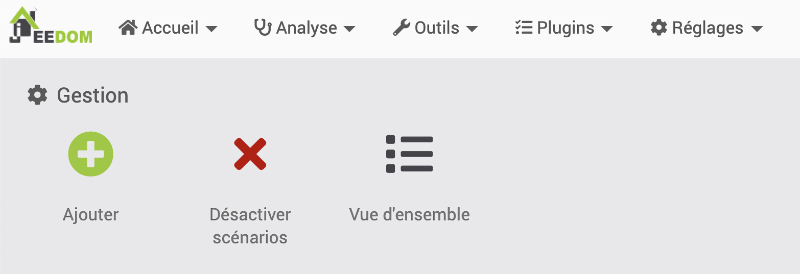
* Donnez un nom au scénario, par exemple « Porte ouverte allume lumière ». Vous verrez alors l'écran de configuration du scénario. * Vous pouvez regrouper les scénarios afin de mieux vous y retrouver.
* Vous pouvez regrouper les scénarios afin de mieux vous y retrouver.
Certains aiment les regrouper par fonctionnalité (ex : Lumières, Chauffage), d'autres par pièce (ex : Cuisine, Salon) ou encore par appareil (ex : Store, Porte). À vous de décider.
Si le regroupement ne vous intéresse pas pour l'instant, je vous suggère de mettre tous vos scénario dans un groupe nommé « Maison ». * L'information la plus importante dans cet écran, c'est le mode du scénario. C'est là que vous indiquez ce qui va le déclencher. + Il peut être provoqué, par exemple par l'ouverture d'une porte. + Il peut être programmé, par exemple tous les jours à 8h00. + Il peut également être une combinaison des deux, par exemple allumer les lumières dès qu'une présence est détectée (provoqué) OU lorsqu'il est 21h00 (programmé).

Dans le scénario que nous bâtissons, nous allons choisir Provoqué puisque c'est l'ouverture de la porte qui sera le déclencheur.
- Un scénario peut être provoqué par un équipement ou encore par un événement.
Les événements sont représentés par des mots-clés, par exemple :
-
start# pour le démarrage de Jeedom¶
-
begin_backup# pour le début d'une sauvegarde¶
-
begin_update# pour le début d'une mise à jour¶
-
user_connect# lorsqu'un usager se connecte à Jeedom¶
- etc.
- Pour un scénario déclenché par un événement, vous devez cliquez sur le bouton +Déclencheur puis entrer le mot-clé correspondant dans la case Evénement. Mais ce n'est pas le déclencheur qui nous intéresse dans le cas présent donc passez à l'étape suivante.
- Pour un scénario déclenché par un équipement (c'est ce que nous voulons ici), vous devez cliquez sur le bouton +Déclencheur puis sur l'icône Choisir une commande.

Dans la fenêtre qui apparaît, sélectionnez l'objet auquel le détecteur d'ouverture de porte est associé. Vous pourrez ensuite sélectionner le détecteur puis la commande qui déclenchera l'action. Dans notre cas, ce sera son état.
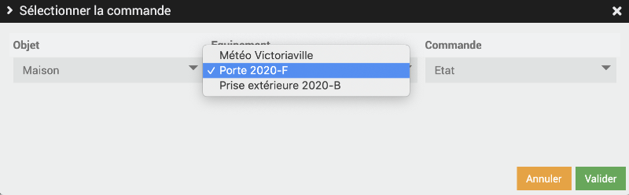
Vous verrez apparaître une chaîne composée de l'objet, de l'équipement puis de la commande :
#[Maison][Porte 2020-F][Etat]# * Si vous laissez le déclencheur comme cela, le scénario sera déclenché dès que l'état change.
Il est également possible de déclencher le scénario seulement lorsque l'équipement a une valeur précise.
Il faut à ce moment compléter le déclencheur à la main. Pour que le scénario se déclenche seulement lorsque la porte est ouverte :
#[Maison][Porte 2020-F][Etat]# == 1
* Pour indiquer ce que le scénario fera, vous devez cliquer sur l'onglet Ajouter bloc dans le haut de l'écran.
* Plusieurs types de blocs sont disponibles, par exemple Si/Alors/Sinon, Action, Boucle, Dans, etc. Ici, nous allons choisir Action.
* Au bas de la ligne Action, cliquez sur Ajouter puis choisissez Action. * Cliquez sur l'icône Sélectionner la commande.
* Cliquez sur l'icône Sélectionner la commande.
 * Indiquez quel équipement sera affecté et quelle commande sera effectuée dessus.
* Indiquez quel équipement sera affecté et quelle commande sera effectuée dessus.
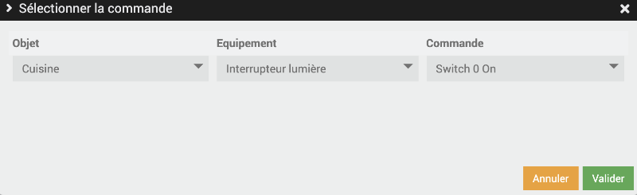
Vous verrez alors la chaîne qui indique ce qui se passera, dans mon cas :
#[Cuisine][Interrupteur lumière][Switch 0 On]# * Si vous désirez que la lumière demeure allumée, votre scénario est complet.
Par contre, si vous désirez, par exemple, qu'elle s'éteigne après 1 minute, cliquez à nouveau sur Ajouter au bas de la ligne Action puis choisissez Bloc Dans. * Ce bloc attend une durée en minutes. Entrez 1. * Ajoutez une action puis indiquez que la lumière doit être fermée : #[Cuisine][Interrupteur lumière][Switch 0 Off]#. * Cliquez finalement sur Sauvegarder.
Tester le scénario¶
Pour tester le scénario, il est possible de cliquer sur le bouton Exécuter.
Si vous désirez avoir plus d'informations sur ce qui se passe pendant l'exécution, vous pouvez appuyer sur Ctrl+Exécuter sous Windows ou ⌘ Cmd+Exécuter sous Mac.
Ceci enregistrera le scénario, l'exécutera puis affichera le log.
Dans cet impression d'écran, on voit que le scénario a été lancé manuellement, que la condition a été évaluée à Faux (la porte n'était pas ouverte) et que rien d'autre ne s'est produit puisque la condition n'était pas respectée.

Modifier un scénario existant¶
Pour modifier un scénario, suivez ces étapes :
- Rendez-vous dans Outils / Scénarios.
- Sélectionnez le scénario à modifier.
- Vous obtiendrez le même écran que lors de la création du scénario. Vous pouvez y modifier les informations de base dans l'écran qui apparaît : Nom du scénario, mode, déclencheur, etc.
- Pour modifier les détails du scénario, cliquez sur l'onglet Scénario dans le haut de l'écran.
- Vous obtiendrez le même écran que vous avez ajouté un bloc. Vous pouvez y modifier les conditions et actions à exécuter.
Scénario sous forme de texte¶
Si vous le désirez, vous pouvez voir votre scénario sous forme de texte en cliquant sur l'icône Édition Texte.

Voici le détail du scénario que nous venons de créer.

Pour plus d'information¶
« Scénarios ». Jeedom. https://doc.jeedom.com/fr_FR/core/4.0/scenario
« Concevez vos scénarios avec Jeedom ». Jeedomiser. https://jeedomiser.fr/article/les-scenarios-dans-jeedom/
32.2 Créer un scénario programmé¶
Les scénarios Jeedom peuvent être provoqués, par exemple ouvrir la lumière de la cuisine quand la porte s'ouvre, ou encore programmés, par exemple démarrer la cafetière à tous les jours à 6h15.
Je vais vous guider ici dans la création d'un scénario programmé.
Le fonctionnement des scénarios programmés est semblable à celui des scénarios provoqués. Seul le déclencheur diffère.
Pour créer un scénario programmé, suivez ces étapes :
- Vous devez d'abord ajouter vos appareils connectés à Jeedom.
- Rendez-vous dans le menu Outils / Scénarios puis cliquez sur Ajouter.
* Donnez un nom au scénario, par exemple « Démarrage cafetière ». Vous verrez alors l'écran de configuration du scénario.
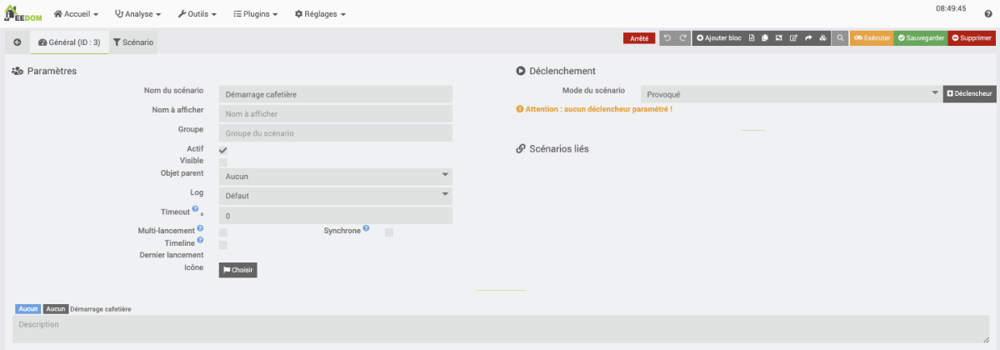
* La case Groupe vous permet de regrouper les scénarios selon vos préférences,regrouper. * Dans la zone Mode du scénario, choisissez Programmé. * Pour entrer les détails de la programmation, cliquez sur +Programmation. * Le moment où le scénario doit être lancé utilise la syntaxe de la crontab. Vous pouvez cliquer sur le point d'interrogation à droite de la boîte de saisie Programmation pour lancer l'assistant cron.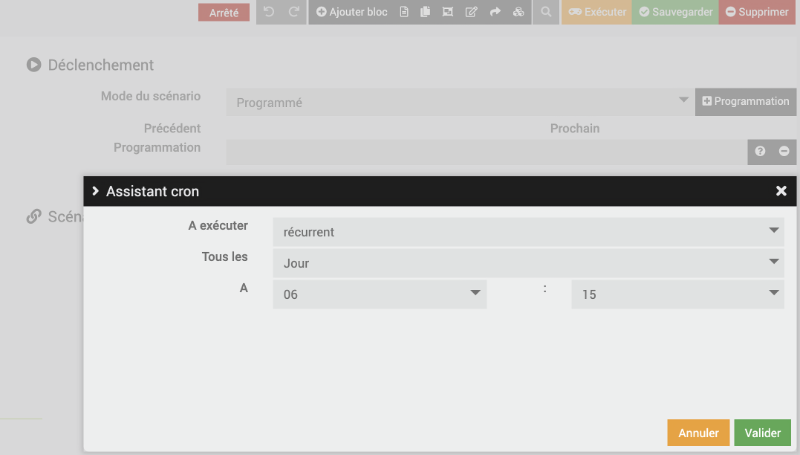
Il est également possible d'entrer les informations directement dans la boîte de saisie.
Il s'agit d'une chaîne de 5 blocs séparés par un espace.
Les blocs sont dans l'ordre :
- Minutes
- Heure
- Jour du mois
- Numéro du mois
- Jour de la semaine (lundi = 1)
Les blocs non utilisés doivent être représentés par un astérisque.
Par exemple :
- Pour démarrer à tous les jours à 20h30, entrez 30 20 * * *
- Pour démarrer à tous les mercredis à 8h15, entrez 15 8 * * 3
- Pour démarrer le 8 de chaque mois à 10h00, entez 0 10 8 * *
- Pour démarrer à chaque année le 31 décembre à 23h59, entrez 59 23 31 12 *
- Pour permettre de choisir les jours de la semaine où la cafetière doit démarrer automatiquement, cliquez sur + Ajouter un bloc dans le haut de l'écran puis choisissez Si/Alors/Sinon.
 * Dans la zone Si, vous devez entrer une condition. Vous pouvez utiliser des tags pour identifier la date (#date#), le jour de la semaine (#sjour#), le nom du mois (#smois#), etc.
* Dans la zone Si, vous devez entrer une condition. Vous pouvez utiliser des tags pour identifier la date (#date#), le jour de la semaine (#sjour#), le nom du mois (#smois#), etc.
Pour éviter que l'action ne soit réalisée les samedis et dimanches, entrez #sjour# not in ['Samedi', 'Dimanche'] * Maintenant, vous devez entrer l'action à réaliser. Sous ALORS, cliquez sur + Ajouter et choisissez Action.
 * À l'aide des bouton qui ouvrent des assistants ou en entrant directement les information, remplissez les zones pour que :
+ l'équipement
+ de la prise de votre cafetière
+ soit activé.
* À l'aide des bouton qui ouvrent des assistants ou en entrant directement les information, remplissez les zones pour que :
+ l'équipement
+ de la prise de votre cafetière
+ soit activé.

Et voilà, la prise sera activée tous les jours de semaine à 6h15!
Pour plus d'information¶
« Les scénarios Jeedom : La notion de temps ». domo-blog. https://www.domo-blog.fr/scenarios-jeedom-domotique-notion-temps/
« crontab guru ». Cronitor. https://crontab.guru/
32.3 Scénario avec plusieurs déclencheurs ou programmations¶
Il est possible de créer un scénario qui pourra se déclencher dans différents contextes.
Par exemple un scénario pourrait allumer la cafetière lorsqu'il est 6h00 ou lorsqu'un mouvement est détecté dans la cuisine.
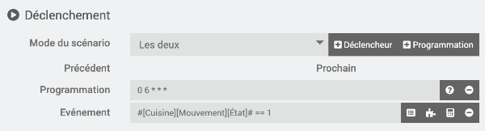
Un autre scénario pourrait envoyer un courriel lorsqu'Axelle entre à la maison ou lorsque Justin entre à la maison.

Pour y arriver, il suffit de cliquer plusieurs fois sur +Déclencheur ou sur +Programmation.
Ce qu'il faut comprendre, c'est que lorsqu'il y a plusieurs déclencheurs ou programmations, le scénario sera lancé lorsque l'un OU l'autre des contextes survient.
Scénario avec un déclencheur suivi d'un bloc Si/Alors/Sinon¶
L'utilisation de plusieurs déclencheurs est très différente de l'utilisation d'un seul déclencheur suivi d'un bloc Si/Alors/Sinon.
Dans ce cas, pour que l'action survienne, il faut que le déclencheur survienne ET que la condition du SI soit vraie au moment où le scénario est lancé.
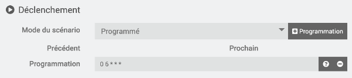
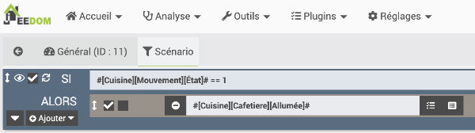
Dans le scénario ci-haut, la cafetière sera allumée s'il est 6h00 ET qu'il y a du mouvement dans la cuisine. Donc, si vous restez au lit trop longtemps, vous n'aurez pas de café puisqu'aucun mouvement ne sera détecté au moment où le scénario est déclenché :-(
32.4 Tags dans un scénario¶
Que le scénario soit programmé, provoqué ou les deux, il est possible d'utiliser un bloc Si/Alors/Sinon afin d'ajouter une condition pour que l'action ait lieu.
Cette condition peut être spécifiée à l'aide d'un équipement, par exemple quand Annie est à la maison ou quand la nuit est tombée.
Elle peut également être basée sur des tags pour identifier différents moments.
Parmi les tags existants, notons1 :
#seconde#: Seconde courante (sans les zéros initiaux, ex : 6 pour 08:07:06).#hour#: Heure courante au format 24h (sans les zéros initiaux). Ex : 8 pour 08:07:06 ou 17 pour 17:15.#minute#: Minute courante (sans les zéros initiaux). Ex : 7 pour 08:07:06.#day#: Jour courant (sans les zéros initiaux). Ex : 6 pour 06/07/2017.#month#: Mois courant (sans les zéros initiaux). Ex : 7 pour 06/07/2017.#year#: Année courante.#time#: Heure et minute courantes. Ex : 1715 pour 17h15.#date#: Jour et mois. Attention, le premier nombre est le mois. Ex : 1215 pour le 15 décembre.#sday#: Nom du jour de la semaine. Ex : Samedi.#nday#: Numéro du jour de 0 (dimanche) à 6 (samedi).#smonth#: Nom du mois. Ex : Janvier.
Les tags doivent être entrés à la main. Vous devrez également ajouter le code qui complète la condition.
Par exemple :
- Pour éviter que l'action ne soit réalisée les samedis et dimanches, entrez #sjour# not in ['Samedi', 'Dimanche']
- Pour que l'action ne se déroule qu'entre 12h00 et 13h00 (bornes incluses), entrez #hour# >= 12 && #hour# <= 13
- Pour que l'action ne se déroule qu'avant 8h30, entrez #time# < 830
- Pour que l'action se déroule en janvier ou en mars, entrez #month# == 1 || #month# == 3
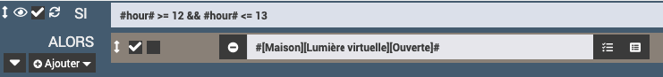
Source¶
- « Scénarios - Les tags ». Jeedom. https://doc.jeedom.com/fr_FR/core/4.2/scenario#Les%20tags
Pour plus d'information¶
« Les Fonctions PHP dans les scénarios de la domotique Jeedom - les tags ». YouDom. https://youdom.net/fonctions-php-scenario-jeedom/#3-les-tags
« Les scénarios Jeedom : La notion de temps ». Guides Jeedom. https://www.domo-blog.fr/scenarios-jeedom-domotique-notion-temps/
32.5 Scénarios avec la météo¶
Si vous avez configuré le plugin météo dans Jeedom, il est possible d'utiliser les prévisions météorologiques dans vos scénarios.
Petit détail pas très intuitif : quand vous sélectionnez la météo comme événement déclencheur ou comme condition, la section Commande info vous présente différentes conditions météo telles que Vitesse du vent, Température, Humidité, etc.
Certaines de ces conditions sont suivies de +1, +2, +3 ou +4. Il s'agit des prévisions pour dans 1 jour, dans 2 jours, etc.
32.6 Scénario qui travaille avec des variables¶
Les variables dans Jeedom offrent beaucoup de souplesse pour contrôler les objets connectés de notre système domotique.
On pourrait, par exemple, conserver dans une variable la plus haute température enregistrée dans la journée par un capteur placé dans la cuisine. À 19h, si cette valeur est supérieure à 25, la barrière qui donne accès aux friandises congelées sera débarrée automatiquement. Pas mal, non?
Pour créer une variable, rendez-vous dans le menu Outils / Variables.
Donnez un nom à votre variable, une valeur par défaut si nécessaire puis cliquez sur le crochet vert à la droite de la ligne.
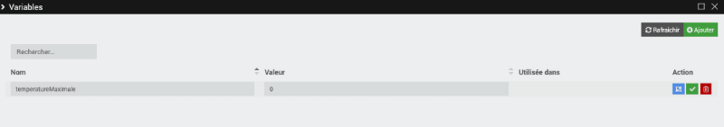
Pour utiliser cette variable, créez un nouveau scénario.
Il est possible d'utiliser la variable dans le déclencheur, par exemple pour déclencher le scénario lorsque la température est supérieure à celle qui est présentement dans la variable.
Voici ce que le déclencheur devrait contenir : #[Cuisine][Capteur 5-en-1][Température]# > #variable(temperatureMaximale)#
Notez que le mot variable doit demeurer tel quel. Seul le nom de la variable sera adapté selon vos besoins.
Pour travailler avec une variable dans l'action du scénario, on pourra ajouter un bloc de type Code.
Dans ce bloc, une variable peut être lue à l'aide de :
Bloc de code du scénario (PHP)
et elle peut être modifiée à l'aide de :
Bloc de code du scénario (PHP)
Et voici le code qui permettra d'enregistrer la température dans la variable :
Bloc de code du scénario (PHP)
$cmdinfo = "#[Cuisine][Capteur 5-en-1][Température]#";
$temperature = cmd::byString($cmdinfo)->execCmd();
$scenario->setdata('temperatureMaximale', $temperature);
32.7 Scénario qui s'éternise¶
En temps normal, un scénario s'exécute en peu de temps.
Le scénario passera donc rapidement du statut En cours :
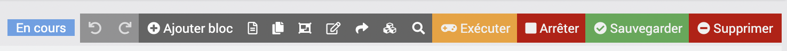
Au statut Arrêté :
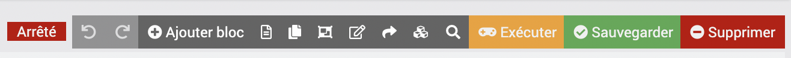
Bien sûr, le scénario sera plus long à exécuter dans certaines circonstances, par exemple lorsqu'il y a une attente prévue avec un bloc Dans.
Comportement erratique¶
Si jamais le comportement de vos scénarios semble erratique, vérifiez si un des scénario est toujours en cours d'exécution.
Un exemple de ce qui peut causer ce comportement : le scénario tente d'envoyer un courriel mais le serveur SMTP n'est pas disponible.
Autre exemple : le scénario comporte une boucle infinie.
Tant que le scénario est en cours d'exécution, il ne peut pas être relancé, ni avec le déclencheur, ni en cliquant sur Exécuter.
Arrêter un scénario¶
Quand un scénario demeure en cours d'exéction sur une longue période, vous pouvez cliquer sur Arrêter pour y mettre fin.
Note : il est parfois normal que le scénario demeure en cours d'éxécution longtemps. Ce sera le cas, par exemple s'il fait clignoter une DEL branchée au GPIO,clignoter.
Il est alors possible d'arrêter le scénario à l'aide d'un autre scénario,scenario.
32.8 Comment déboguer un scénario?¶
Quand un scénario ne donne pas les résultats escomptés, vous avez à votre disposition différentes techniques de débogage pour mettre le doigt sur ce qui ne va pas.
Pour certaines des techniques que je vous présente ici, vous avez déjà en main tout ce qu'il y a à savoir.
Pour d'autres, vous pouvez consulter les liens pour apprendre comment faire.
- Lancer le scénario manuellement en cliquant sur le bouton Exécuter plutôt que d'utiliser le déclencheur. Ceci permet de vérifier si c'est le déclencheur qui cause problème.
- Lancer le scénario puis aller voir ce qu'il y a dans le log du scénario en cliquant sur l'icône Log.
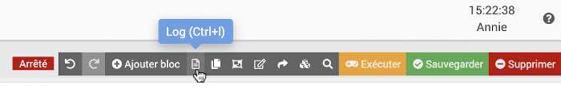
- Si le log est vide, c'est que le scénario n'a jamais été déclenché.
- S'il a été déclenché (manuellement ou avec le déclencheur), le log indiquera si une condition a été évaluée à vrai ou à faux.
-
Il indiquera également chaque bloc réalisé.
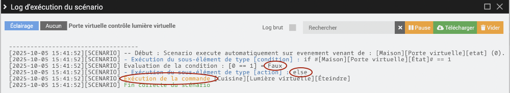
* Écrire vos propres informations de débogage dans le log du scénario. * Vérifier si le scénario n'est pas pris dans une opération qui prend beaucoup de temps ou dans une boucle sans fin. * Dans le cas où le scénario lance un script Python : + Tester d'abord le script Python dans une fenêtre Terminal. + Quand on sait qu'il fonctionne, tester le fonctionnement de la commande qui lance le script en cliquant sur le bouton Tester dans l'onglet Commandes du plugin Script. + Ce n'est qu'une fois ces deux étapes réalisées qu'on est prêts à déboguer le scénario en tant que tel.
+ Ce n'est qu'une fois ces deux étapes réalisées qu'on est prêts à déboguer le scénario en tant que tel.